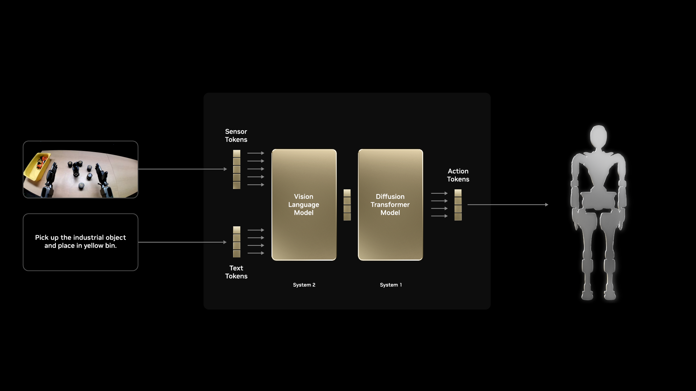
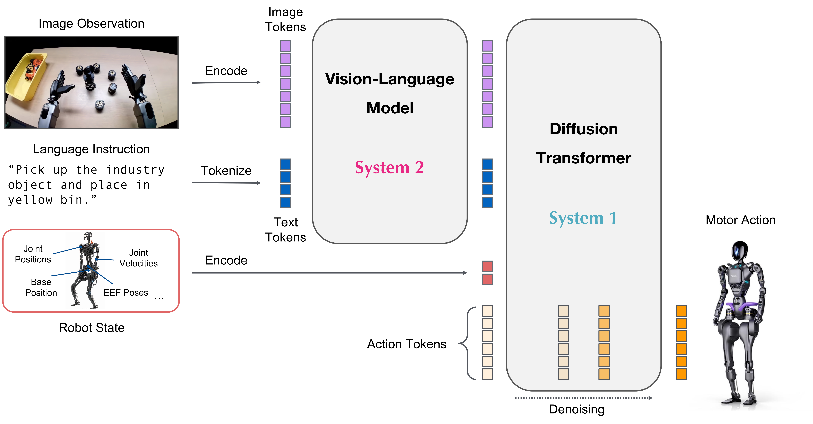

5.1 视觉-语言-动作模型（VLA）与 GR00T#
4.3 节用人工设计的阶段决定何时接近和出脚。现在改由模型从指令与示范中学习这些决策。
从任务指令到动作#
视觉-语言-动作模型（VLA，Vision-Language-Action）读取图像、语言指令和机器人状态，预测接下来的一段动作。语言说明目标，示范教它怎样完成；动作可以是关节目标，也可以是交给已有技能的运动请求。


图像与语言引导动作生成。来源：NVIDIA SO-101 Sim-to-Real 课程 ↗。
GR00T 如何生成动作#
GR00T N1.7 约有 30 亿参数。视觉语言模型骨干 Cosmos-Reason2-2B 提取图像与指令特征，flow matching 动作头结合机器人状态生成动作序列。System 2 与 System 1 分别指这两部分，并不表示已实现异步控制。


机器人状态单独编码后进入动作头。来源：NVIDIA Isaac GR00T（Apache 2.0）↗。
左右滑动查看完整图示
1图像与任务指令
图像提供场景，语言说明目标。
2System 2
视觉语言骨干提取特征；这里的推理不输出文字计划。
3System 1
结合状态，从噪声逐步生成连续动作。
4动作执行
本实验输出移动、视线和踢球请求，由已有技能执行。
5机器人状态
身体状态直接参与动作生成。
6再次观察
动作改变观察，普通推理不更新权重。
这里的 Cosmos-Reason2 是模型内部骨干；5.3 节的 Cosmos 3 用于扩展数据，两者用途不同。
为什么一次预测一段#
动作块（action chunk）让相邻动作连贯，也减少推理次数。通常只执行前几步便重新观察：执行越长，推理次数越少，但纠偏越晚。5.2 节将比较预测长度与实际执行长度。
预训练、后训练与推理#
阶段 |
做什么 |
|---|---|
预训练 |
从图文、视频、仿真与真实机器人数据学习通用表示 |
后训练 |
用 Microduck 的观察与动作示范更新选定参数 |
推理 |
权重不变，根据新观察预测动作 |
微调是后训练的一种形式。冻结模块仍参与计算，但不更新参数；训练 step 指优化器更新，不是机器人迈一步。本实验的后训练示范来自仿真；合成数据如何扩展到更多外观，见 5.3 节。
模仿学习与强化学习#
模仿学习（IL）用教师的“观察 → 动作”示范训练策略。成功结果或无动作标签的视频，本身不足以训练这里的动作接口。
模仿学习（本节 GR00T） |
强化学习（第 3 章 PPO） |
|
|---|---|---|
训练信号 |
教师在相应观察下的动作 |
与环境交互后的奖励和回报 |
主要难点 |
偏离示范后缺少纠正经验 |
奖励设计与探索成本 |
两者可以配合：GR00T 模仿教师决定运动请求，底层调用强化学习训练的技能。也可以先模仿、再用强化学习改进同一个策略；本实验没有用任务奖励更新 GR00T。
怎样判断学会了#
低训练损失只表示拟合了示范。应在未参与训练和调参的起点上测试完整任务，检查进球、不摔倒、恢复站立。新光照、新指令说法和新任务需要分别验证；一个成功视频不能证明可靠性或泛化。
本实验只训练一个球场、一条射门指令。与板载策略比较时，应固定起点、底层技能和成功标准，同时考虑成功率、延迟、示范量与训练成本；更大的模型不一定更合适。
检查理解
换一种说法仍能射门，是否说明模型会“走到球旁但不要碰球”？
查看解析
不能。前者是同一任务的语言变化，后者需要不同动作及独立验证。
5.2 节 将这套方法接到 Microduck 的 8 维请求接口。